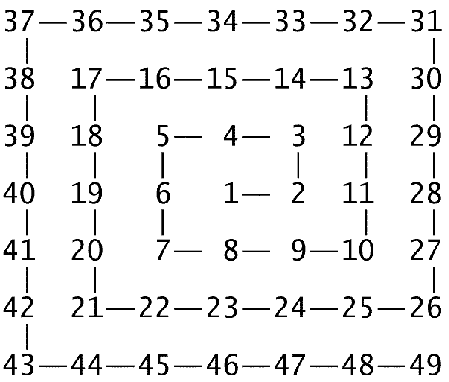
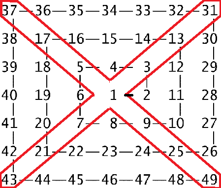
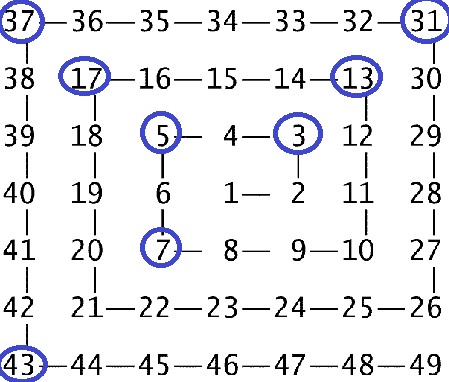

Hola, hoy contaré un problema que me gusto mucho y la forma en que lo resolvi, intente buscar el problema en google para ver cómo se llamaba pero no lo encontré por lo que lo nombre "Espiral", este problema fue uno de los tantos en la hackathon organizada por mercadoLibre en Junio del 2016.
El problema:
La mejor forma de explicar este problema es con un ejemplo. Voy a tomar como ejemplo una matriz de orden 7 (7x7) y pondre los numero en forma de espiral, tal y como muestra la imagen
Si tomamos las dos diagonales de la matriz obtendremos los números:
1, 3, 5, 7, 9, 13, 17, 21, 25, 31, 37, 43, 49
Tenemos un total de 13 numeros, de los cuales los siguientes son números primos:
3, 5, 7, 13, 17, 31, 37, 43
La longitud de los numeros de las diagonales es 13 y la de los números primos es 8 por lo tanto alrededor del 62% son números primos.
El objetivo del problema es averiguar el número de orden de la matriz tiene sus diagonales por debajo del 10% de numeros primos.
La solución:
Esta es la solución que a mi se me ocurrio implementada en C#
https://github.com/maximorero14/Espiral